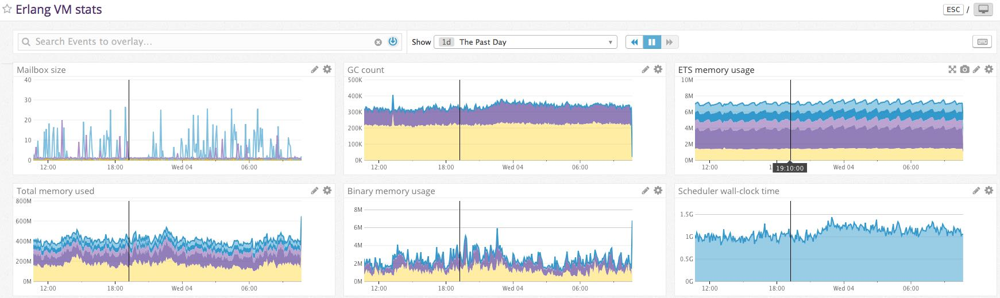

DogStatsD is Datadog’s extension of StatsD. It adds tags to the metrics.
The defaults assume that you’re running a statsd server on localhost (true if the agent is installed locally).
There are a number of configuration settings. You can either provide them as environment variables in ALL_CAPS or in an Erlang config file in all_lowercase.
| name | type | default | info |
|---|---|---|---|
| AGENT_ADDRESS | string | "localhost" | Hostname or IP where we can send the StatsD UDP packets |
| AGENT_PORT | integer | 8125 | Port that the StatsD agent is listening on |
| GLOBAL_PREFIX | string | "" | Prefix to attach before all metric names. The . will be inserted for you |
| GLOBAL_TAGS | map | #{} | Tags to attach to all metrics |
| SEND_METRICS | boolean | true | Set to false when you’re running tests to disable sending any metrics |
| VM_STATS | boolean | true | Collect stats on the Erlang VM? |
| VM_STATS_DELAY | integer | 60000 | Time in ms between collection Erlang VM stats |
| VM_STATS_SCHEDULER | boolean | true | Collect stats on the scheduler? |
| VM_STATS_BASE_KEY | string | "erlang.vm" | All the VM stats will begin with this prefix (after the GLOBAL_PREFIX if that is set) |
rebar.config file
{dogstatsd, "1.0.0", {pkg, dogstatsde}}List the dogstatsd application in your *.app.src file
Provide configuration as needed when starting up
For VM stats, no action is needed — they’ll collect on their own as long as the application is running
dogstatsd:gauge("users.active", UserCount, #{ shard => ShardId, version => Vsn })mix.exs file
{:dogstatsd, "~> 1.0.0", hex: :dogstatsde}List :dogstatsd as an application in your mix.exs
Provide configuration as needed when starting up
For VM stats, no action is needed — they’ll collect on their own as long as the application is running
Dogstatsd.gauge("users.active", user_count, %{ :shard => shard_id, :version => vsn })If VM_STATS is not disabled, dogstatsd will periodically run erlang:statistics/1 and friends and collect data on the VM’s performance:
| name | erlang call | info |
|---|---|---|
proc_count | erlang:system_info(process_count) | |
proc_limit | erlang:system_info(process_limit) | |
messages_in_queues | process_info(Pid, message_queue_len) | over all PIDs |
modules | length(code:all_loaded()) | |
run_queue | erlang:statistics(run_queue) | |
error_logger_queue_len | process_info(Pid, message_queue_len) | where Pid belongs to error_logger |
memory.total | erlang:memory() | |
memory.procs_userd | erlang:memory() | |
memory.atom_used | erlang:memory() | |
memory.binary | erlang:memory() | |
memory.ets | erlang:memory() | |
io.bytes_in | erlang:statistics(io) | |
io.bytes_out | erlang:statistics(io) | |
gc.count | erlang:statistics(garbage_collection) | |
gc.words_reclaimed | erlang:statistics(words_reclaimed) | |
reductions | erlang:statistics(reductions) | |
scheduler_wall_time.active | erlang:statistics(scheduler_wall_time) | there are multiple schedulers, and the scheduler tag differentiates between them |
scheduler_wall_time.total | erlang:statistics(scheduler_wall_time) | there are multiple schedulers, and the scheduler tag differentiates between them |

All metrics share the same signature:
-type metric_name() :: iodata().
-type metric_value() :: number().
-type metric_sample_rate() :: number().
-type metric_tags() :: map().
-spec MetricFunction(metric_name(), metric_value(), metric_sample_rate(), metric_tags()) -> ok.Some metrics have aliases
| name | alias |
|---|---|
| gauge | |
| increment | counter |
| histogram | |
| timing | timer |
| set |
Metric name and value are required. Sample rate defaults to 1.0. Tags defaults to an empty tag-set, but the value of GLOBAL_TAGS (which also defaults to an empty tag-set) is always merged with the passed tags.